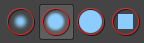
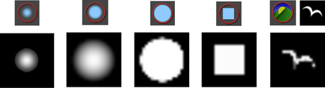
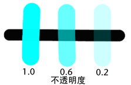
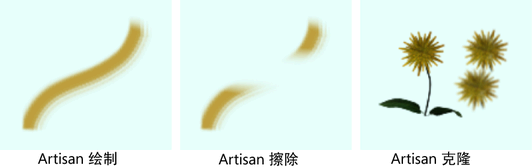
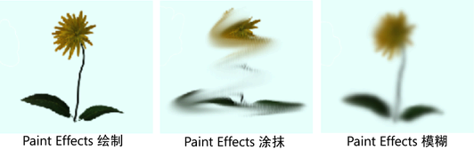
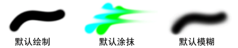
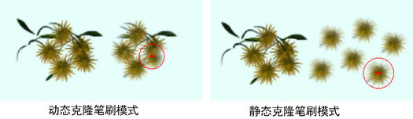
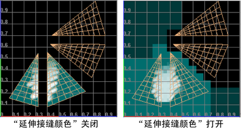

使用这些设置在 3D 空间中进行绘制。
- 在“渲染”(Rendering) 菜单集中，“
 。
。
“笔刷”(Brush)设置
定义笔刷轮廓（或形状）。
- “半径 (U) (Artisan) ”(Radius (U) (Artisan))
-
当选定“Artisan”笔刷时，显示该选项。如果您使用的是光笔并且对“压力贴图”(Pressure map)选定了“半径”(Radius)或“二者”(Both)，则应设定笔刷的最大可能半径。无论使用多大的力按光笔，笔刷半径都不会超过该半径。如果您使用的不是光笔，则该设置定义笔刷的半径。
- “半径 (L) (Artisan)”(Radius (L) (Artisan))
-
当选定“Artisan”笔刷时，显示该选项。如果使用光笔，则设定在按该光笔时笔刷的半径下限或可能的最小半径。如果未使用光笔，则将不会使用该设置。
- “比例 (PFX)”(Scale (PFX))
-
当选定“Paint Effects”笔刷时，显示该选项。该设置对应“Paint Effects”的“全局比例”(Global Scale)设置（该设置通过公因子调整笔刷属性）。这将均匀地缩放绘制效果，以便您可以使用不同的尺寸绘制同样的效果。
- “宽度(PFX)”(Width (PFX))
-
当选定“Paint Effects”笔刷时，显示该选项。该设置对应“Paint Effects”的“笔刷宽度”(Brush Width)设置（该设置以 Maya 工作单位定义笔刷宽度）。
- Artisan
-
选择当“绘制操作”(Paint Operations)为“绘制”(Paint)、“擦除”(Erase)或“克隆”(Clone)时，使用哪个“Artisan”笔刷轮廓。“Artisan”轮廓由灰度图像定义。您可以从 mayapath/brushShapes 或 mayapath/Maya/Contents/brushShapes (Mac OS X) 目录下的 40 个预定义笔刷中选择，包括以下四个常用笔刷。
您可以使用任何支持的文件格式创建自己的形状。Maya 使用图像的亮度值并将图像缩放至 256x256。
若要选择图像，请单击“浏览”(Browse)按钮，选择形状，然后单击“打开”(Open)。绘制时，调整“图章间距”(Stamp Spacing)可获得所需的效果。
若要选择最后打开的图像，请单击“浏览”(Browse)按钮左侧的图标 。如果选择 brushShapes 目录中提供的图像文件，则此图标将改为显示相应的形状。
 - Paint Effects
-
选择当“绘制操作”(Paint Operation)为“绘制”(Paint)、“涂抹”(Smear)或“模糊”(Blur)时，您要用的“Paint Effects”笔刷。“Paint Effects”笔刷由属性设置的特定组合定义，可能非常简单（就像钢笔、蜡笔、油画颜料和铅笔笔刷一样），或者可以模拟生长以获得其外观（如花、羽毛、头发和火笔刷）。

单击“上一个笔刷”(Last brush)按钮以拾取上次选定的“Paint Effects”笔刷。“绘制操作”(Paint Operation)更改为“绘制”(Paint)、“涂抹”(Smear)或“模糊”(Blur)，具体取决于您为上次选定的笔刷预设定义的“笔刷类型”(Brush Type)。

单击“编辑模板笔刷”(Edit Template Brush)按钮打开选定笔刷的“Paint Effects 笔刷设置”(Paint Effects Brush Settings) 窗口。您对这些设置所做的任何更改将应用于下一个“Paint Effects”笔划。

单击“获取笔刷”(Get Brush)按钮，可使用内容浏览器(Content Brower)打开 Paint Effects 文件夹。如果选择笔刷，则“绘制操作”(Paint Opera ion)将更改为“绘制”(Paint)、“涂抹”(Smear)或“模糊”(Blur)，具体取决于您为笔刷预设定义的“笔刷类型”(Brush Type)。（3D 绘制不支持“Paint Effects”的“擦除”(Erase）。）
- 旋转到笔划(Rotate To Stroke)
-
确定圆化程度不一致的笔刷形状的对齐方式。启用该选项可相对于笔刷移动方向对齐图章形状。禁用该选项可相对于上方向向量对齐图章形状。当您更改视图时，图章形状保持其方向。
颜色(Color)设置
- 颜色(Color)
-
单击“颜色”(Color)框打开“颜色选择器”(Color Chooser)并选择绘制时要使用的颜色。如果选择“Paint Effects”笔刷，则此颜色代表“Paint Effects”“颜色 1”(Color1)设置。有关使用“颜色选择器”(Color Chooser)的详细信息，请参见“颜色选择器”(Color Chooser)。使用“颜色”(Color)值滑块更改颜色值（从 0 到 1）。
- 不透明度
-
设定“颜色”(Color)值分数以应用于笔划内的所有笔刷图章。当图章重叠时，值会增加。在同一区域上绘制时，图章会重叠。使用不透明度”(Opacity)设置，您可以进行更为缓和的更改，以获得更精细的效果。将“不透明度”(Opacity)设定为 0 时，笔刷笔划不起作用。“不透明度”(Opacity)对“Paint Effects”笔刷不起作用。

“整体应用”(Flood)区域
使用该部分中的设置，可定义在对全部或部分纹理整体应用设定颜色或者从纹理中擦除颜色时要使用的颜色和不透明度。
- 颜色(Color)
-
单击“颜色值”(Color Value)框打开“颜色选择器”(Color Chooser)并选择要整体应用的颜色。
- 不透明度
-
执行整体应用时，设定要应用的“颜色”(Color)值的分数。“不透明度”(Opacity)对“Paint Effects”笔刷不起作用。
- 整体应用绘制(Flood Paint)
-
单击该按钮可在绘制中整体应用设定颜色。
- 整体应用擦除(Flood Erase)
-
单击该按钮可以“整体应用全部”(Flood All)或“整体应用选定面”(Flood Selected Faces)形式进行擦除。
- 整体应用(Flood)
-
设定下列选项之一：
- 全部(All)
-
对整个纹理整体应用“颜色”(Color)值和“不透明度”(Opacity)值。仅当“绘制操作”(Paint Operation)设定为“绘制”(Paint)或“擦除”(Erase)时，才能整体应用曲面。当整体应用“擦除”(Erase)时，纹理将还原为其上次保存的版本。
- 选定面
-
仅对多边形的选定面或细分曲面整体应用“颜色”(Color)值和“不透明度”(Opacity)值。必须退出“3D 绘制工具”(3D Paint Tool)才能选择面。
“绘制操作”(Paint Operations)设置
选择要使用的绘制操作和融合模式。
Artisan
选择以下“Artisan”笔刷操作之一。Maya 会使用上次为该操作选定的“Artisan”笔刷轮廓。但是，如果上一个轮廓是自定义轮廓，则 Maya 只记得它是一个自定义笔刷，而不记得是哪个自定义笔刷。这意味着更改一个操作的自定义笔刷也将更改选择了自定义笔刷轮廓的任何其他操作的自定义笔刷。
- 绘制(Paint)
-
根据定义的设置将绘制应用于曲面。
- 橡皮擦(Erase)
-
移除绘制的像素上的颜色，以显示上次保存的纹理。若要设定要擦除的背景纹理，请禁用“每一笔划后更新”(Update on Stroke)并单击“保存纹理”(Save Textures)按钮。操作设定为“擦除”(Erase)时执行整理应用会将纹理还原到其上次保存的版本。请参见擦除、涂抹和模糊绘画。
- 克隆
-
克隆已应用于曲面的绘制的采样。然后，您可以在该曲面上的其他位置或其他曲面上绘制该采样。不能在操作设定为“克隆”(Clone)时整体应用。请参见克隆绘制。

Paint Effects
选择以下“Paint Effects”笔刷操作之一。从内容浏览器或您的工具架选择一个 Paint Effects 笔刷时，“3D 绘制工具”(3D Paint Tool)将根据笔刷的“笔刷类型”(Brush Type)设置自动设定操作。（“3D 绘制工具”(3D Paint Tool)不支持笔刷类型为“擦除”(Erase)的笔刷。）
“3D 绘制工具”(3D Paint Tool)使用上次为该操作选定的“Paint Effects”笔刷。如果之前未曾选定“绘制”(Paint)笔刷，该操作将使用默认“Paint Effects”绘制笔刷。
- 绘制(Paint)
-
根据为选定“Paint Effects”笔刷定义的设置将绘制应用于曲面。在选定“Paint Effects”的“绘制”(Paint)的情况下进行整体应用时，Maya 将使用“整体应用颜色”(Flood Color)。
- 涂抹
-
沿笔划路径将相邻颜色融合在一起。操作设定为“涂抹”(Smear)时不能执行整体应用。
- 模糊
-
用“Paint Effects”笔刷进行模糊时，将会通过平均相邻颜色的颜色值来柔化相邻颜色的边。可以使用“模糊强度”(Blur Intensity)滑块控制模糊。操作设定为“模糊”(Blur)时不能执行整体应用。

所有笔刷类型都使用笔刷属性所定义的形状。例如，如果使用具有管的“模糊”(Blur)笔刷在某个笔划上绘制，则会在管跨过该绘制的位置进行模糊，而不是沿着“模糊”(Blur)笔划路径进行模糊。
- 设置擦除图像
-
单击该按钮，以便将当前绘制层设定为擦除时将返回到的层。
- 重置笔刷
-
单击“重置笔刷”(Reset Brushes)，以将每个操作的“Artisan”笔刷轮廓还原为默认设置（“软笔刷轮廓”(Soft Brush Profile)，即 softBrush.jpg），并将每个操作的“Paint Effects”笔刷设置还原为该操作的默认设置。
 - 融合模式
-
选择希望如何改变将绘制应用于纹理的方式。这些融合模式是常用绘画软件包中提供的模式的一部分。基础颜色是您正在其上进行绘制的颜色。
注： 仅当笔刷为“Artisan”时，才使用“融合模式”(Blend Modes)。
- 默认(Default)
-
绘制每个像素以使其成为结果颜色。这是默认模式。
- 变亮
-
将基础颜色和绘制颜色中较浅的颜色作为结果颜色。替换比绘制颜色暗的像素，并保持比绘制颜色浅的像素不变。
- 变暗
-
将基础颜色和绘制颜色中较暗的颜色作为结果颜色。替换比绘制颜色浅的像素，并保持比绘制颜色暗的像素不变。
- 相乘(Multiply)
-
将基础颜色与绘制颜色相乘。结果颜色始终为较深的颜色。将任何颜色与黑色（值为 0）相乘将生成黑色。任何颜色乘以白色（值为 1）都将保持不变。用黑色或白色以外的颜色绘制时，每个重叠笔划都会产生逐渐变暗的颜色。
- 屏幕
-
将绘制颜色的反色与基础颜色相乘。结果颜色始终为较浅的颜色。用黑色屏蔽颜色将保持不变。用白色屏蔽将生成白色。
- 叠加(Overlay)
-
乘以颜色，具体取决于基础颜色。图案或颜色与现有像素叠加，同时保留基础颜色的高光和阴影。基础颜色与绘制颜色混合，以表示原始颜色的亮度或暗度。
- 恒定(Constant)
-
仅使用绘制颜色。绘制颜色与基础颜色之间没有融合。设置的“不透明度”(Opacity)值将应用于绘制颜色。
- 克隆笔刷模式(Clone Brush Mode)
-
在移动目标笔刷时，选择“动态”(Dynamic)可移动克隆源（对绘制进行采样的区域）。
选择“静态”(Static)可保持克隆源不动。
 - 设置克隆源
-
单击该按钮，然后单击曲面上的一个区域，以将该区域设定为源，或将从中克隆绘制采样的区域设定为源。如果在创建笔划期间在克隆源上绘制，原始绘制采样将用于笔划其余部分，但是下一笔划将使用更新后的克隆源绘制采样。
- 模糊强度
-
定义笔刷的模糊效果。值越高，模糊效果越明显。
“文件纹理”(File Textures)区域
若要直接在模型上绘制属性，构成该模型的曲面必须为该属性指定了文件纹理。可以创建文件纹理，并将其指定给此区域中的选定曲面，也可以在“Hypershade”中完成此操作。
- 要绘制的属性
-
选择要绘制的材质属性。可用属性因材质类型而异。例如，“镜面反射颜色”(Specular Color)不适用于“Lambert”材质。如果要绘制其他属性，请将材质指定给具有可用属性的模型。有关这些属性的详细信息，请参见公用表面材质属性。您可以从以下 RGB 和单个通道属性中选择。注： 要绘制自定义属性，请将其添加到材质上，并从“要绘制的属性”(Attribute to Paint)下拉列表中进行选择。
RGB 单个通道 颜色(Color)
凹凸贴图(BumpMap)
透明度(Transparency)
反射率
白炽度
漫反射
镜面反射颜色
半透明
环境光(Ambient)
反射的颜色
- 指定/编辑纹理(Assign/Edit Textures)
-
若要指定文件纹理，请选择要绘制的属性，然后单击该按钮。
此时将显示“指定/编辑文件纹理”(Assign/Edit File Textures) 窗口，其中包含与 Hypershade 的“转化为文件纹理选项”(Convert to File Texture Options) 窗口中的选项类似的选项：“大小 X”(Size X)、“大小 Y”(Size Y)、“保持纵横比”(Keep Aspect Ratio)、“图像格式”(Image Format)、“抗锯齿”(Anti-alias)、“背景模式”(Background Mode)、“背景颜色”(Background Color)、“填充纹理接缝”(Fill Texture Seams)、“使用虚拟平面烘焙”(Bake Using Virtual Plane) 和“烘焙透明度”(Bake Transparency)。
有关这些选项的描述，请参见 Hypershade 编辑(Edit)菜单。
注释：
- 如果以前未绘制过文件纹理或未将文件纹理指定给选定曲面，则会在“命令反馈”(Command Feedback)行显示一条警告，告知您一些曲面没有为当前属性指定文件纹理。此外，当您在曲面上移动笔刷时，笔刷轮廓上会显示一个 X，表示不能在曲面上绘制。
- 请确保在绘制对象之前先指定一个新着色器，否则您将修改默认着色器。如果发生这种情况，则绘制的纹理将被指定给在场景中创建的任何新对象。
- 保存纹理(Save Textures)
-
可随时单击“保存纹理”(Save Textures)按钮来保存纹理。
- 重新加载文件纹理(Reload File Textures)
-
如果已在其他绘制软件包（例如“Paint Effects”）中修改“3D 绘制”(3D Paint) 纹理，则使用此按钮可更新该纹理。如果在其他程序中修改文件纹理后未重新加载它，“3D 绘制”(3D Paint)可能无法识别所做的更改。
- 每一笔划后更新
-
启用该选项可在绘制每一笔划后会保存纹理。在进行 IPR 渲染时应启用该选项。当绘制完每一笔划然后松开鼠标（或光笔）时，纹理将更新，IPR 渲染将刷新以反映所做更改。
注： 启用“每一笔划后更新”(Update on Stroke)后不能进行擦除。启用“高质量渲染”(High Quality Rendering)时可以使用“3D 绘制工具”(3D Paint Tool)；这样，可以在绘制各属性（如凹凸和透明度）时进行预览，但是在进行绘制时无法查看笔划自身，因为仅在每一笔划结束时才会更新纹理。
启用“每一笔划后更新”(Update on Stroke)以便自动刷新“UV 纹理编辑器”(UV Texture Editor)窗口中的视图。
- 每一笔划后保存纹理(Save Texture on Stroke)
-
启用该选项可以将每个笔划保存到您正在编辑的文件纹理中。所做的更改将保留，即使未保存场景也是如此。禁用该选项时（默认设置），必须保存场景以使对文件纹理的更改生效。
- 延伸接缝颜色(Extend Seam Color)
-
该选项可确保在进行渲染时，UV 壳边界处的纹理属性之间能够平滑过渡。如果启用该选项，Maya 会穿过壳将您绘制的颜色延伸到背景中，并在边界处将绘制颜色和背景色平均化。默认情况下，此选项处于禁用状态。

“笔划”(Stroke)区域
有关详细信息，请参见“Artisan 工具设置”的“笔划”部分。
“光笔压力”(Stylus Pressure)区域
有关详细信息，请参见“Artisan 工具设置”的“光笔压力”部分。
“显示”(Display)区域
有关详细信息，请参见“Artisan 工具设置”的“显示”部分。